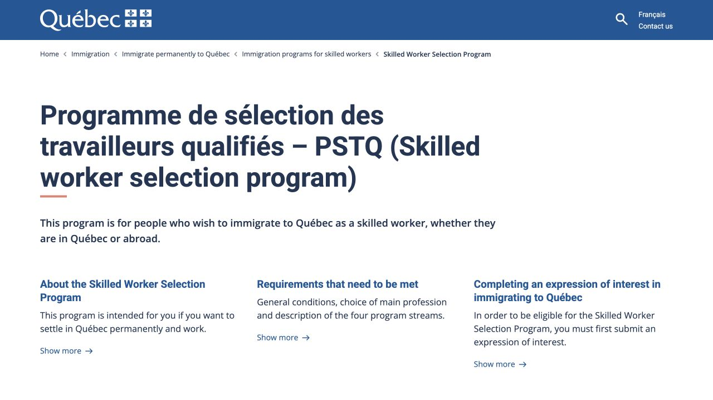

证据档案 / 核查基准 2026.09.17
来源 qc
Programme de sélection des travailleurs qualifiés – PSTQ (Skilled worker selection program) | Gouvernement du Québec
| 字段 | 记录 |
|---|---|
| 来源编号 | qc |
| 核查日期 | 2026-09-17 |
| 取证方式 | browser DOM |
| 页面或文件SHA-256 | 987f8c4a58e9348982a429fb640694e86993b4856f32e8ba6e508378ff4d34d9 |
官方截图
截图时间：2026-09-17T05:35:03.010Z。截图只是当时页面证据，最新规则仍查看原页。
